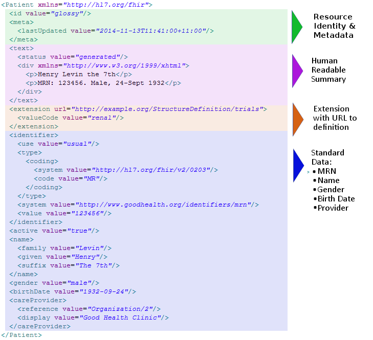

Foundation
Foundation- 当前位置：简介
FoundationFHIR Infrastructure  Work Group Work Group | Maturity Level: N/A | Standards Status: Informative |
FHIR® – Fast Health Interoperable Resources (hl7.org/fhir) – 是由 HL7 提出的新一代标准框架.FHIR 整合了 HL7 V2,V3 和 CDA 的优点,同时利用最新的Web标准并聚焦可实现性.
FHIR 的解决方案是基于一些称之为“资源”的模块化组件的. 这些资源可以很容易地应用到现有的生产系统中,只需已有的其他方案的一小部分成本就能够解决实际的临床和管理上存在的问题. FHIR适用于多种场景– 智能手机APP、云通信、基于EHR的数据共享、大型医疗机构内服务器间通信等等。
FHIR在现行标准基础上做了很多改进:
A central challenge for healthcare standards is how to handle the wide variability caused by diverse healthcare processes. Over time, more fields and optionality are added to the specification, gradually adding cost and complexity to the resulting implementations. The alternative is relying on custom extensions, but these create many implementation problems too.
FHIR solves this challenge by defining a simple framework for extending the existing resources and describing their use with Profiles. All systems can read all resources, but applications can add more control and meaning using profiles. Many healthcare contexts require extensive local agreements.
In addition, each resource carries a human-readable text representation using html as a fall-back display option for clinical safety. This is particularly important for complex clinical information where many systems take a simple textual/document based approach.
This simple example shows the important parts of a resource: a local extension, the human readable HTML presentation, and the standard defined data content.
FHIR has resources for administrative concepts such as patient, provider, organization and device as well as a wide variety of clinical concepts covering problems, medications, diagnostics, care plans, financial concerns and more.
FHIR is published as a Standard for Trial Use. During the Trial Use phase, HL7 actively monitors implementations in order to continue to improve the specification to be responsive to their needs. Due to the many advantages FHIR offers, trial use is already beginning right now.
http://hl7.org/fhir . Follow us on Twitter using #FHIR